OpenWrt编译-树莓派

基本交互
make menuconfig 就是设定编译参数的命令，执行完这条命令之后，我们可以看到一个交互窗口 (Dialog Box)。在交互窗口中。按下“上下光标键”可以切换窗口中间的项目，选中项目将以蓝色高亮显示，按“左右光标键”可以切换窗口下方的 < Select > < Exit > < Help > < Save > < Load > 四个选项，“回车键”的功能就取决于这四个选项中的哪个被选中。比如，当前高亮项目是 Target System (Atheros AR7xxx/AR9xxx)，如果窗口下方的 < Select > 被选中，那么此时回车键的作用就是进入 Target System (Atheros AR7xxx/AR9xxx) 这一项目的二级菜单，如果 < Exit >被选中，那么回车键的作用就是退出交互或者返回上一级。
在一些选项中，我们还可能碰到类似这样的选项：
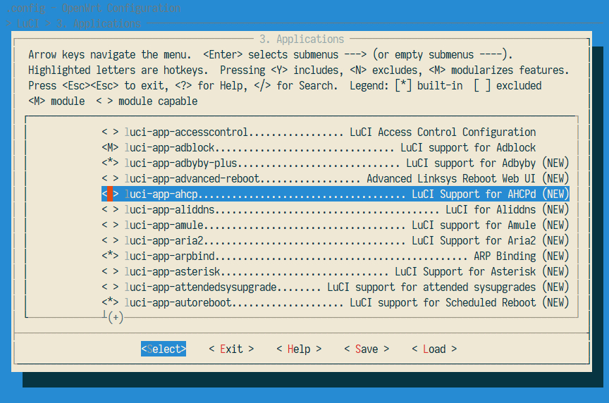
在类似的菜单中，我们需要使用“空格键”来交互。在被蓝色高亮选中的项目上按下空格键，即可在 < >、< M >、< ✲ > 三种状态下切换，其中，< > 表示不编译此项目，< M >表示此项目将被编译但不会集成到最终的固件中，< ✲ >表示此项目既会被编译也会被集成到固件中，在编译过程中，我们一般会用到 < >、< ✲ > 这两项， < M > 项较少用到，但是在编译一些比较容易和其他程序冲突时的软件包时，我们可以酌情选择 < M > 项，虽然编译完成后的固件不会默认集成这个软件包，但是在后期我们可以在编译完成目录找到这个软件包自行安装。
那么，什么时候该用“回车”交互，什么时候该用“空格”交互呢？项目末尾带有--->的项目都可以使用回车交互，项目开头带有 < > 的项目都可以使用 空格交互，如果一个项目即带有 ---> 又带有 < >，那这个项目既可以使用回车 (进入下一级菜单) 交互也可以使用空格 (选择是否被编译) 交互。如果一些选项前面是 -✲-这个样子的，且我们无法更改它的状态，说明这一项是其他项目的依赖项，需要把依赖此项的项目设为取消编译 (即 < > 状态) 后 -✲- 状态才会更改为 < > 状态。
参数选择(32位&IPV4)
好了~掌握了基本交互操作后我们便可进入重头戏“参数选择”了~在接下来的文章中，小苏将以编译 32 位、IPV4 Only 的树莓派 OpenWrt 固件为例为大家详细解读编译过程中涉及到的参数，64 位/ IPV4+IPV6 的固件编译参数与 32位、IPV4 Only 固件大同小异，将会在之后说明。此外因为编译参数较多，小苏将只为大家介绍日常用得到并且已经体现在之前发布的固件中的一些参数，下文中没有提到的部分建议保持默认设置，以下不再赘述~
以下内容只保证使用于树莓派的 OpenWrt 编译过程，不 100% 保证适用于其他设备和情况，但大部分内容应该对其他设备有参考意义。同时小苏也无法回答除树莓派外的其他设备上出现的特有问题 (因为实在是没有其他设备…)。
Target System & Profile
在设置编译参数时，第一件事情是选择 CPU 平台、CPU 和设备，以 32 位树莓派固件为例 (其他设备的 CPU 平台及型号请自行查阅相应资料)：
Target System = Broadcom BCM27xx # 选择 CPU 平台
Subtarget = BCM2709/BCM2710 32 bit based boards # 选择 CPU
Target Profile = Raspberry Pi 2B/3B/3B+/3CM # 选择设备
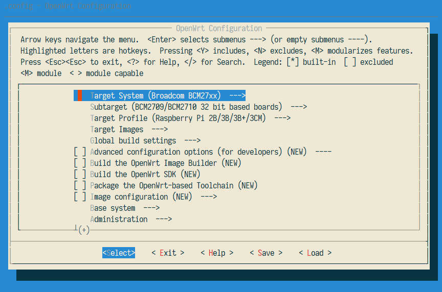
Target Images
Target Images 项为固件镜像选项菜单，按 “回车键”进入：
ext4 = ✲
squashfs = ✲
ext4 和 squashfs
两项为编译生成的镜像中固件分区的文件系统格式，这两者的区别除了文件系统不一致之外，还有一个区别就是 squashfs 格式的固件支持在控制面板内恢复出厂设置，而 ext4 格式暂时不支持，此外 ext4 格式的固件在分区上的自由度上大一些 (比如可以比较方便地调整分区大小等)。
Boot (SD Card) filesystem partition size = 20
此项为镜像中 boot 分区的大小 (将固件刷入 SD 卡，在 Windows 自带的文件资源管理器中看到的盘符就是这个分区)，默认的 20M 基本够用，无需更改。
Root filesystem partition size = 500
此项为镜像中 root 分区的大小，因为树莓派的存储介质为 SD 卡，其存储容量相对于路由器等 ROM 大小固定的设备来说要大得多，所以我们可以尽量将 root 分区设定得大一些 (方便折腾)，小苏的习惯是将 root 分区的分区大小设定为 500M，仅供参考。
除以上几项外，其他参数保持默认，效果如下：
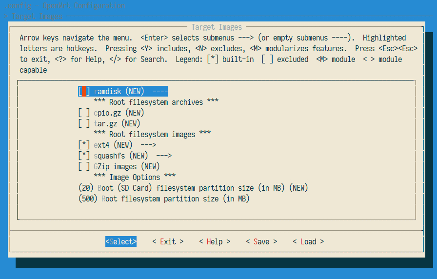
Administration
Administration 菜单下的项目都是一些管理工具，在这个菜单中小苏觉得比较实用的工具是 htop，其他的工具好像平时不怎么用得到 (欢迎指出)~
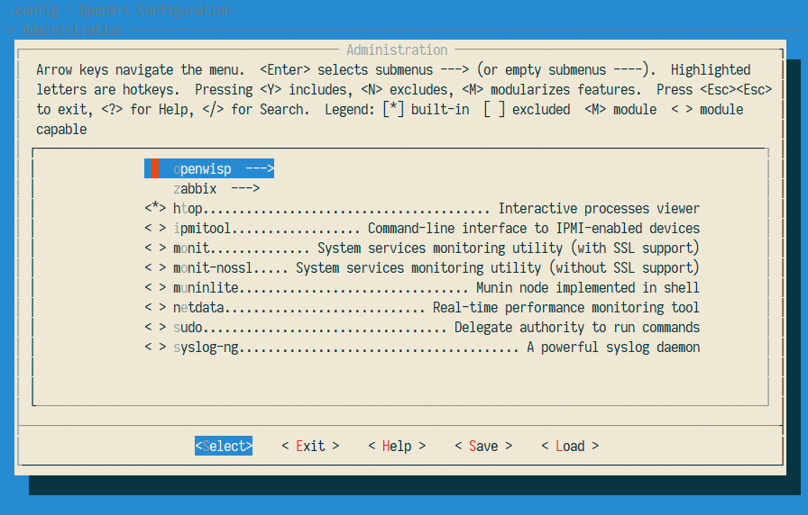
Extra packages
Extra packages 项为 Lean 大为了方便大家配置某些功能而添加的一个贴心功能，选中其中的某个功能相当于选中了一系列软件包和编译参数。
automount = ✲
自动挂载，插入 USB 存储设备时，若文件系统支持，则可以自动挂载设备上的分区至设备。
Support NTFS mount = ✲
此项为 automount 是否支持 NTFS 文件系统的可选项。
autosamba = null
自动挂载 Samba 设备，在树莓派设备上启用此项可能导致板载无线网卡工作不正常，所以请谨慎选用！！
ipv6helper = null
是否加入 IPV6 支持 (因为目前以 IPV4 Only 固件为例介绍，所以目前暂时不勾选这个选项)。
k3wifi = null
此项为针对斐讯 K3 无线方面的一些设定集合，本文暂不涉及。
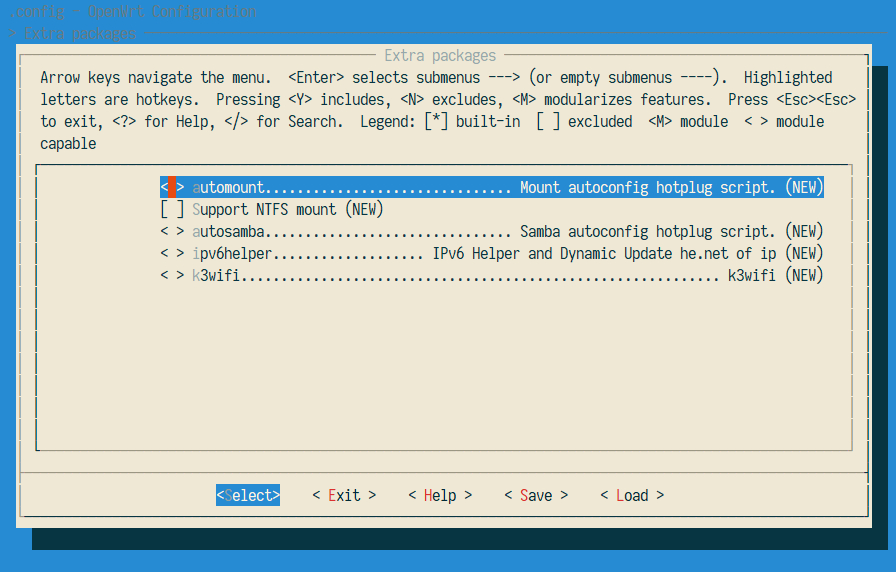
Kernel modules
Kernel modules 菜单中为有关内核的一些参数，包括即将要介绍的文件系统支持，有线网卡支持，无线网卡支持等。
Filesystems
Kernel modules - Filesystems 此项为文件系统支持选项，在这个菜单中你可以选择固件支持的文件系统，以下为小苏推荐添加支持的文件系统：1
2
3
4
5
6
7
8
9
10
11
12
13
14 kmod-fs-exfat = ✲
kmod-fs-exportfs = ✲
kmod-fs-ext4 = ✲
kmod-fs-f2fs = ✲
kmod-fs-nfs = ✲
kmod-fs-nfs-common = ✲
kmod-fs-nfs-common-rpcsec = ✲
kmod-fs-nfs-v3 = ✲
kmod-fs-nfs-v4 = ✲
kmod-fs-nfsd = ✲
kmod-fs-ntfs = ✲
kmod-fs-squashfs = ✲
kmod-fs-vfat = ✲
kmod-fuse = ✲
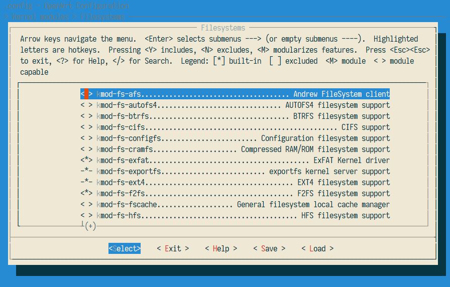
USB Support
Kernel modules - USB Support 为针对 USB 接口的一些配置选项，在这里我们要设定的关键点就是为 USB 有线网卡添加驱动。
以下 将所有以 kmod-usb 开头的项目的状态设为 < * > ，这一操作将为列表中所有 USB 有线网卡添加驱动：1
2
3
4
5
6
7
8
9
10
11 kmod-usb-net = ✲
kmod-usb-net-asix = ✲
kmod-usb-net-asix-ax88179 = ✲
···
kmod-usb-net-smsc95xx = ✲
kmod-usb-net-sr9700 = ✲
接下来为 USB2 和 USB3 控制器添加驱动：
kmod-usb2 = ✲
kmod-usb3 = ✲
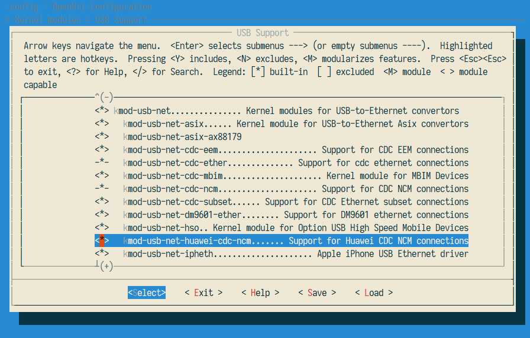
Wireless Drivers
Kernel modules - Wireless Drivers 为无线网卡支持选项，在这个菜单中我们可以为无线网卡添加驱动支持，按小苏上面的习惯应该为全部无线网卡芯片添加支持，但是偏偏是在这里，坑出现了：
在无线网卡支持菜单中，某些无线网卡项目不能同时选中，因为在把驱动打包成 ipk 软件包的过程中，这些产生冲突的驱动包将会使用同一个包名，在将软件包安装到系统的过程中这些同名软件包将会产生冲突而导致编译中断。
经过小苏的不断努力，终于找到了这些可能会产生冲突的软件包，所以在添加无线网卡驱动的过程中，小苏建议将这些无线网卡芯片项目的状态设为 < M >，以便需要时可以自行安装相应的软件包。1
2
3
4
5
6 kmod-libertas-sdio = M
kmod-libertas-spi = M
kmod-libertas-usb = M
kmod-rsi91x-sdio = M
kmod-rsi91x-usb = M
除此之外的其他无线网卡项目都应设置为 < ✲ >，这将为列表中除上面 5 个无线网卡芯片之外的所有无线网卡芯片设备添加驱动。
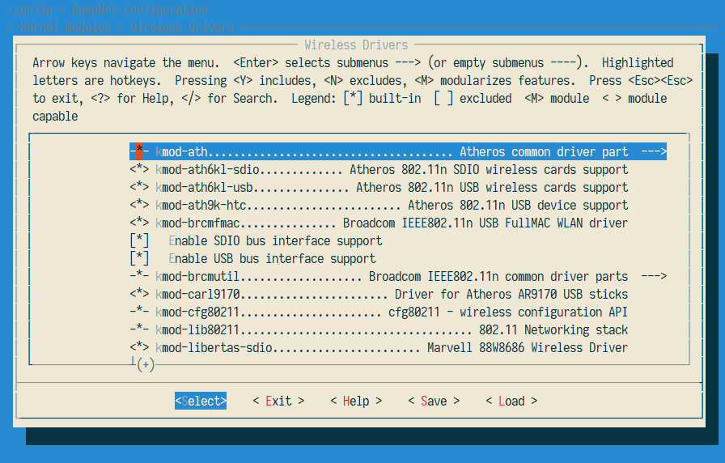
LuCI
接下来就进入编译过程中的重中之重 - LuCI APP 的选择和添加~
LuCI 即为 OpenWrt 控制面板中的 Web 控制面板， 选择和添加 LuCI APP 将把对应 APP 的二进制可执行文件和其对应的 Web 控制面板页面添加到 LuCI 控制面板中。
Applications
LuCI - Applications 菜单即为 LuCI APP 集合，此菜单中的项目即为 LuCI 控制面板中各种各样的功能。
由于选项较多，下面仅列出一些常用的选项：1
2
3
4
5
6
7
8
9
10
11
12
13
14
15
16
17
18
19
20
21
22
23
24
25
26
27
28
29
30
31
32
33
34
35
36
37
38
39
40
41
42
43
44
45
46
47
48
49
50
51
52
53
54
55
56
57
58
59
60
61
62 luci-app-accesscontrol # 访问时间控制
luci-app-adblock # adblock 广告过滤
luci-app-adbyby-plus # 广告屏蔽大师 Plus +
luci-app-advanced-reboot # 高级重启
luci-app-aliddns # 阿里 DDNS 客户端
luci-app-amule # aMule 下载工具
luci-app-aria2 # Aria2 下载工具
luci-app-arpbind # IP/MAC 绑定
luci-app-autoreboot # 支持计划重启
luci-app-commands # Shell 命令模块
luci-app-cshark # CloudShark 捕获工具
luci-app-ddns # 动态域名 DNS
luci-app-dnspod # DNSPod
luci-app-filetransfer # 文件传输
luci-app-firewall # 防火墙支持
luci-app-flowoffload # Turbo ACC FLOW 转发加速
luci-app-frpc # 内网穿透 Frp
luci-app-guest-wifi # WiFi 访客网络
luci-app-hd-idle # 硬盘休眠
luci-app-minidlna # minidlan 服务器
luci-app-mjpg-streamer # 兼容 Linux-UVC 的摄像头程序
luci-app-mwan # MWAN 负载均衡
luci-app-mwan3helper # MWAN3 分流助手
luci-app-n2n_v2 # N2N 内网穿透 VPN
luci-app-nlbwmon # 网络带宽监视器
luci-app-ntpc # NTP 时间同步服务器
luci-app-openvpn # OpenVPN 客户端
luci-app-openvpn-server # OpenVPN 服务器
luci-app-pptp-server # PPTP VPN 服务器
luci-app-ramfree # 释放内存
luci-app-samba # 网络共享 (Samba)
luci-app-samba4 # 网络共享 (Samba4)
luci-app-shadowsocks-libev # SS-libev 服务端
luci-app-shairplay # AirPlay 支持
luci-app-sqm # 流量智能队列管理 (QOS)
luci-app-SSR-plus # SSR/SS/V2Ray 三合一用户界面
Include Shadowsocks New Version # 选择在 SSR-Plus 中是否包含新版 SS 代理
Include V2ray # 选择是否包含 V2Ray 代理
Include Kcptun # 选择是否支持 Kcptun
Include ShadowsocksR Server # 选择是否包含 SSR 服务器
Include ShadowsocksR Socks and Tunnel #选择是否包含 SSR Tunnel
luci-app-ssrserver-python #SSR Python 服务器
luci-app-statistics # 流量监控工具
luci-app-syncdial # 多线多拨
luci-app-transmission # Transmission BT 下载工具
luci-app-ttyd # TTYD 终端命令行
luci-app-upnp # UPnP 服务
luci-app-usb-printer # USB 打印服务器
luci-app-v2ray-pro # V2Ray 代理
luci-app-vlmcsd # KMS 服务器设置
luci-app-vnstat # vnStat 网络监控 (图表)
luci-app-vsftpd # FTP 服务器
luci-app-watchcat # 断网检测与定时重启
luci-app-webadmin # Web 管理页面设置
luci-app-wifischedule # WiFi 计划
luci-app-wireguard # WireGuard 状态
luci-app-wol # Wake on Lan 网络唤醒
luci-app-wrtbwmon # 实时流量监测
luci-app-xlnetacc # 迅雷快鸟
luci-app-zerotier # ZeroTier 内网穿透
其中， luci-app-samba 与luci-app-samba4 两个选项只可选择其中的一项，如果两项都被选中，编译时会因为这两项包名相同而产生冲突造成中断！！
luci-app-v2ray-pro 集成到固件后为默认打开状态，但因为默认情况下未添加任何节点，可能造成极少数网站无法正常打开的情况 (如 阿里云 等)，需要手动关闭 V2Ray 开关才可恢复正常~
大家可以根据自身需求添加上面的 LuCI APP 到固件中，如果想了解此菜单中的其他 LUCI APP 的作用可以查看这篇帖子 (感谢作者的努力~)：
https://www.right.com.cn/forum/forum.php?mod=viewthread&tid=344825
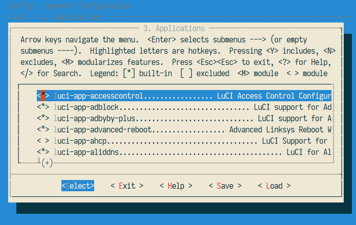
Themes
LuCI - Themes 菜单中可以为 LuCI 控制面板添加主题。Lean 大源码中默认为我们添加了一套 Material 主题，在此菜单选择此主题后控制面板将默认启用此主题，如果你不喜欢这个主题，也可以使用默认的 Bootstrap 主题 (默认已选择)。
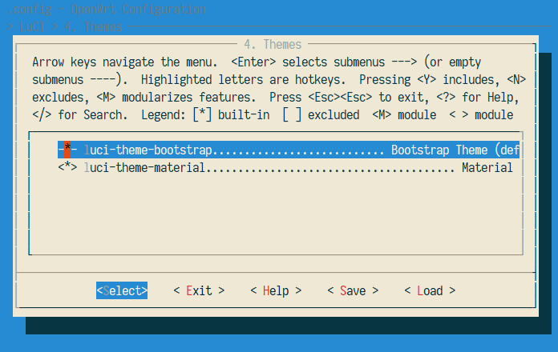
Network
Network 菜单为 OpenWrt 编译过程中和网络有关的选项。
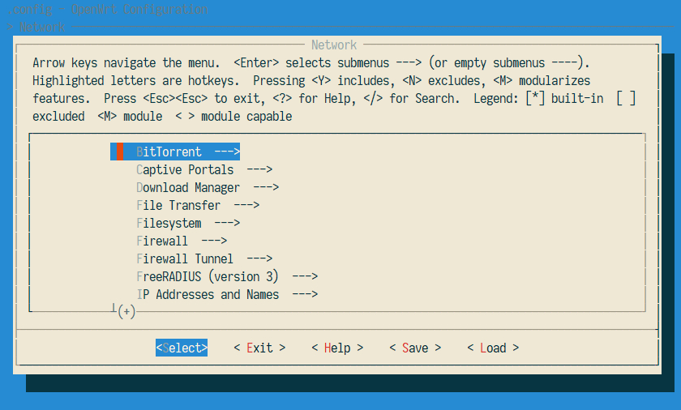
Download Manager
Network - Download Manager 菜单为 Aria2 的 Web 控制面板，在这里小苏推荐选择 webui-aria2 项作为 Aria2 的 Web 控制面板。
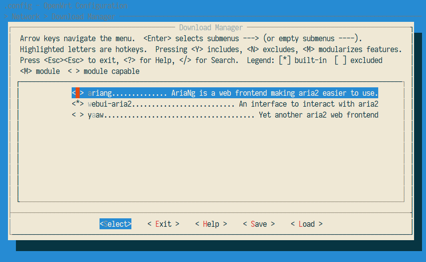
File Transfer
Network - File Transfer 为网络文件传输工具菜单。在这里我们可以添加一些常用的文件传输工具，比如 wget、curl、aria2、rsync 等，我们可以根据需求按需添加。在这里我们还可以设置 aria2 的支持参数 (Network - File Transfer - Aria2 Configuration)
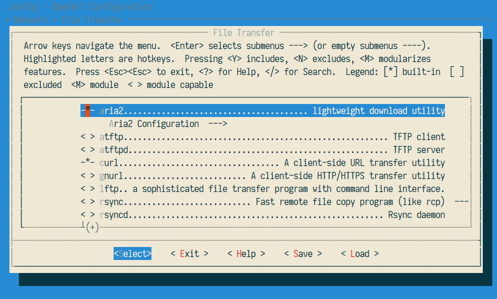
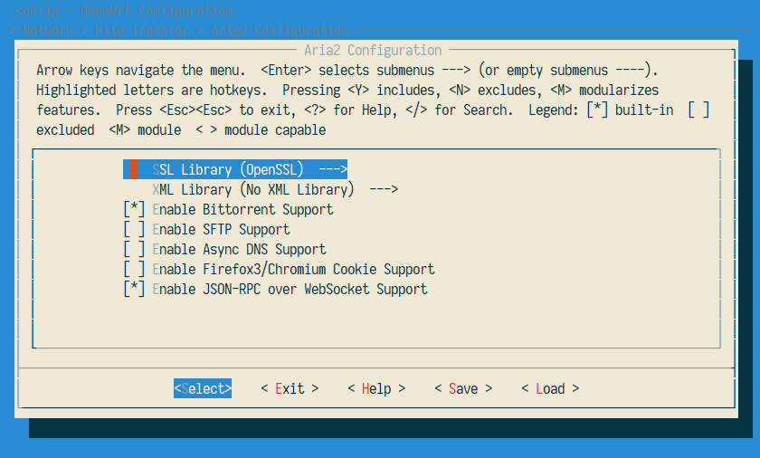
SSH
Network - SSH 菜单为与 SSH 有关的选项，默认情况下 OpenWrt 已为我们添加了 dropbear SSH 服务器，所以在这里我们无需勾选 openssh-server，但默认情况下 SFTP 服务是没有启用的，如果有 SFTP 需求的话我们可以在这里添加 openssh-sftp-client 和 openssh-sftp-server 来启用 SFTP 客户端和服务器。
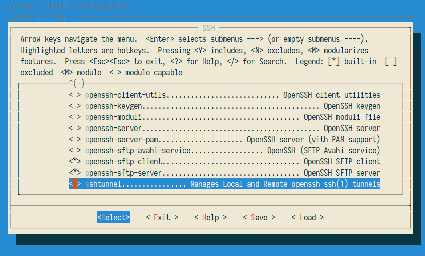
Utilities
Utilities 菜单包含一些额外的实用工具，下文中小苏仅介绍一些常用工具，其他工具可按需添加。
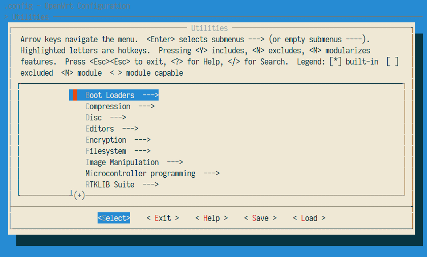
Compression
Utilities - Compression 为压缩工具支持菜单，小苏推荐添加以下压缩工具支持：
bsdtar # tar 打包工具支持
gzip # gzip 压缩工具支持
unzip # zip 解压工具支持
zip # zip 压缩工具支持
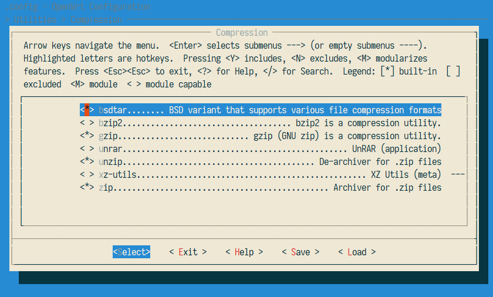
Disc
Utilities - Disc 菜单为一些与文件系统相关的工具，小苏推荐添加以下工具：
fdisk # fdisk MBR 分区工具
gdisk # gdisk GBT 分区工具
lsblk # lsblk 磁盘设备及分区查看工具
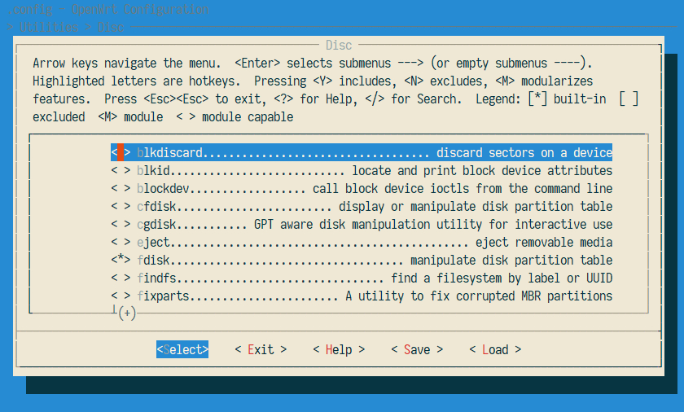
Editors
Utilities - Editors 为编辑器支持菜单，小苏推荐添加 nano 和 vim 编辑器。
注意：在 vim 编辑器系列中只建议添加 vim、vim-full、vim-fuller 三种工具中的一种，否则在编译过程中会因为包名相同产生冲突造成编译中断。
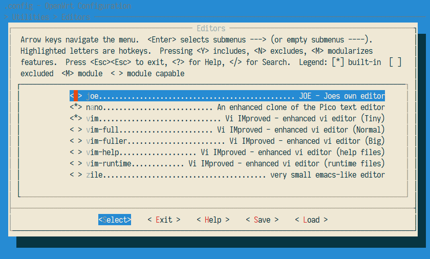
Filesystem
Utilities - Filesystem 菜单为与文件系统相关的工具，小苏推荐添加：
f2fs-tools # f2fs 工具
fstrim # 文件系统 fstrim 工具
resize2fs # ext 分区大小调节工具
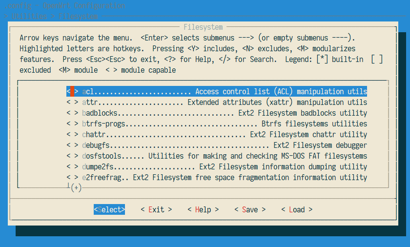
Shells
Utilities - Shells 菜单中可以添加用户交互 Shell，默认 Shell 为 bash，如果大家有需求的话可以添加 zsh。
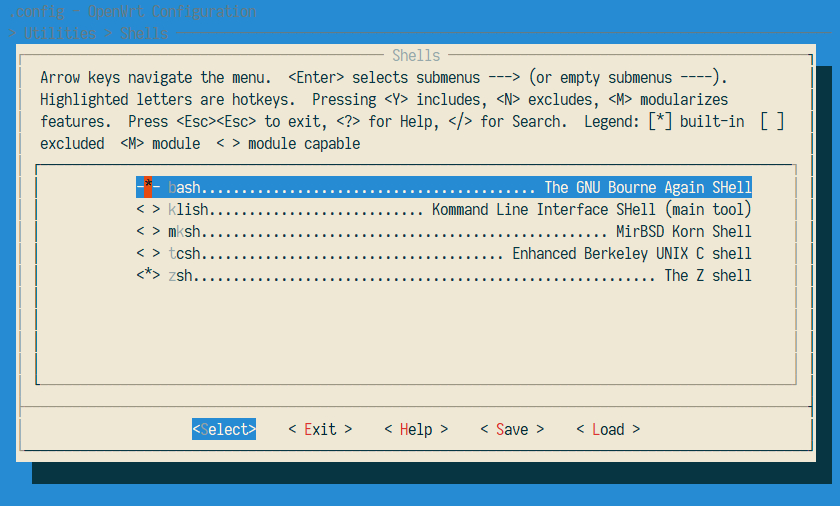
Terminal
Utilities - Terminal 菜单中可以添加和终端有关的工具，小苏推荐添加 screen 和 tmux ，这里就不解释啦~
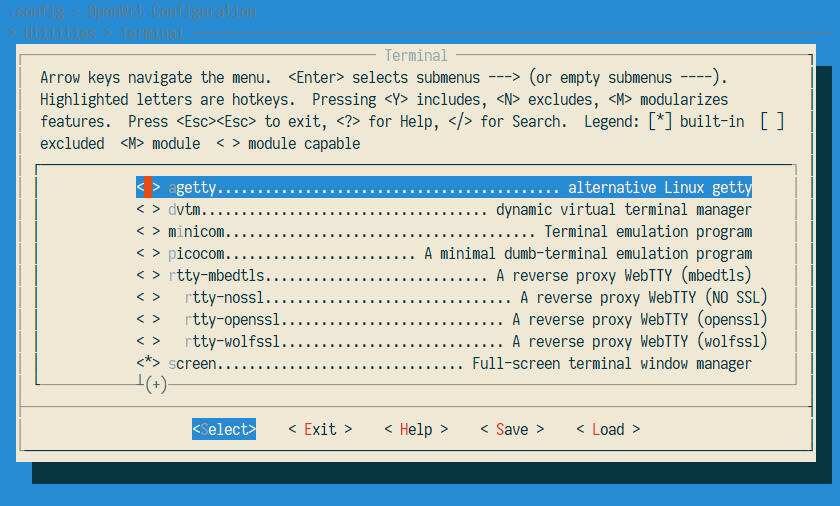
另外在 Utilities 菜单下面还有一些可能比较常用的小工具比如 adb、whereis 等，可以按需添加~
参数选择(IPV6)
若为固件添加 IPV6 支持，按上面 IPV4 固件的步骤操作完成后，还需要进行以下几项：
ipv6helper
在 Extra packages 菜单中将 ipv6helper 设为 < ✲ > 状态：
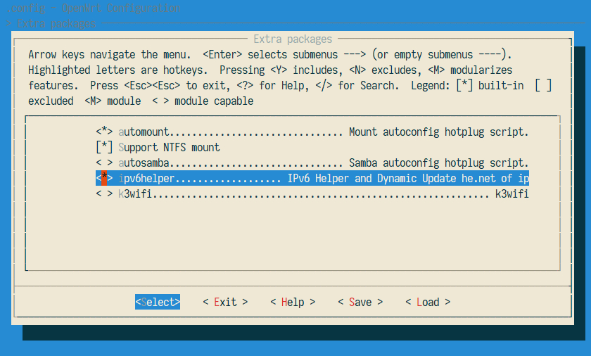
ip6tables 额外选项(可选)
在 Network - Firewall - ip6tables 下启用 ip6tables-extra 和 ip6tables-mod-nat 项：
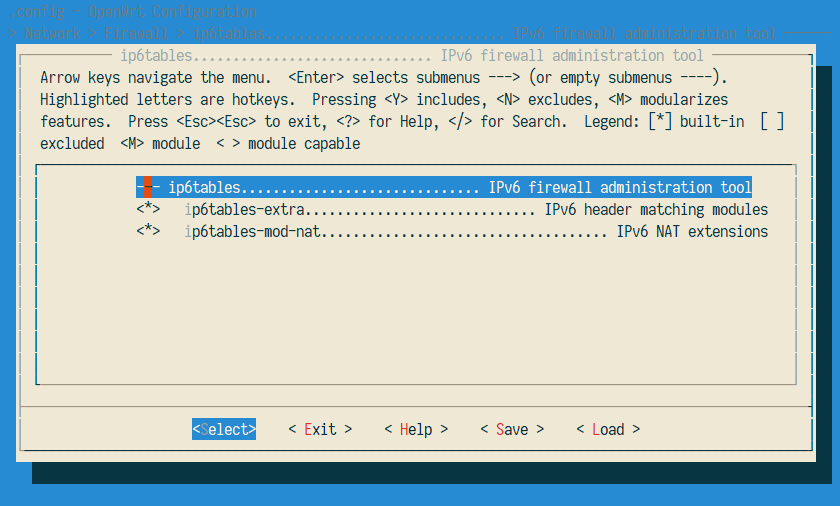
LuCI APP 额外设置
已知多线多拨、负载均衡、mwan3分流助手 这三个 LuCI APP 与 IPV6 网络存在冲突，为固件添加 IPV6 支持时必须取消编译这三个 LuCI APP。
在 LuCI - Applications 中 先后 取消以下项目：
luci-app-syncdial = null
luci-app-mwan3helper = null
luci-app-mwan3 = null
由于luci-app-mwan3 是 luci-app-syncdial 和 luci-app-mwan3helper 这两个软件包的依赖项，所以应该先取消掉这两个选项后才可取消 luci-app-mwan3。
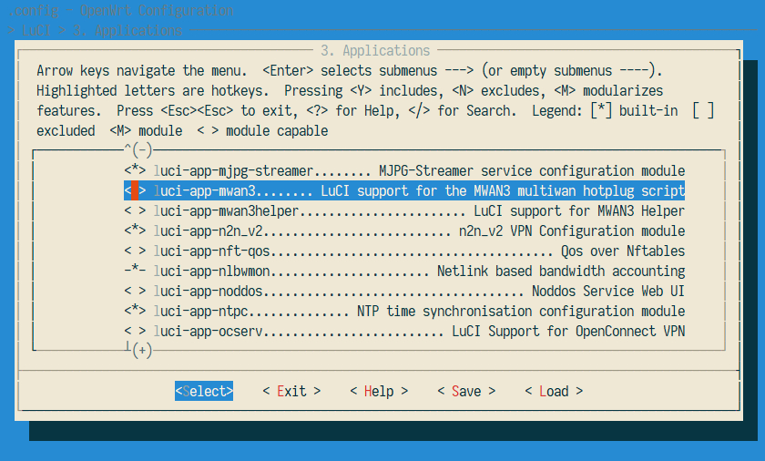
参数选择(64位)
在第一部分中我们介绍的是 32 位固件 (适用于树莓派 2B/3B/3B+) 的编译选项，如果你想编译树莓派 64 位固件 (适用于 树莓派 3B/3B+)，可以按上面 32 位固件步骤操作完成后，额外更改以下几项：
更改 CPU 和设备参数
将 Subtarget 和 Target Profile 更改为适用于 64 位树莓派的参数 (因为 CPU 平台相同，Target System 无需更改)：
Subtarget = BCM2710 64 bit based boards
Target Profile = Raspberry Pi 3B/3B+
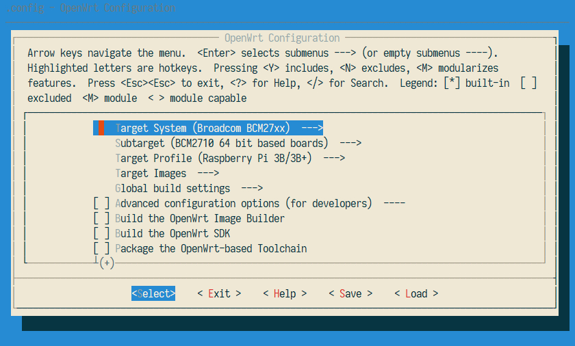
取消 Kcptun 支持
因为 Kcptun 官方暂时没有适配于 64 位设备 (arm64/aarch64) 的软件包，如果编译 64 位设备固件时勾选 Kcptun 将会导致编译过程中无法找到相应的软件包而报错，从而导致编译中断，所以在编译 64 位固件之前我们需要取消对 Kcptun 的支持：
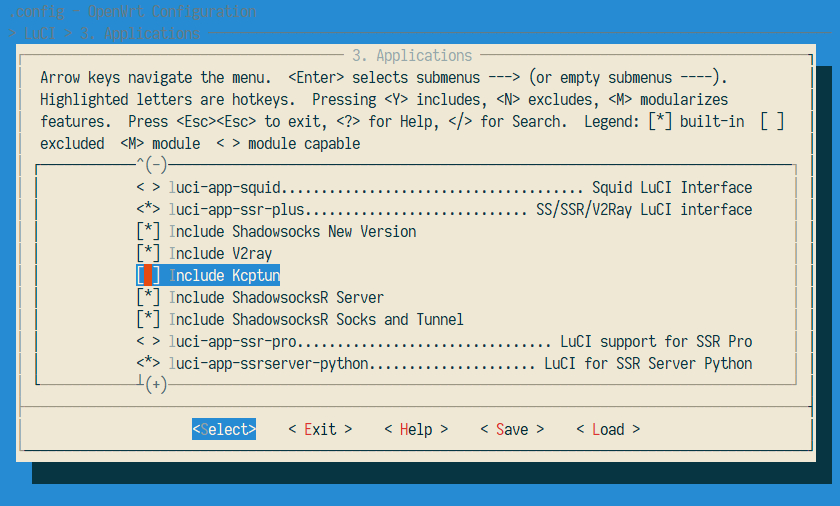
首先我们应该取消在 luci-app-ssr-plus 中对 Kcptun 的支持：
在 LuCI - Applications - luci-app-ssr-plus 中取消选择 Include Kcptun：
取消编译
取消 Include Kcptun 还不够，我们还需要在 Network 中取消对 Kcptun 的编译：
kcptun = null
注意一定要设为 null 不要 设为 < M >！！
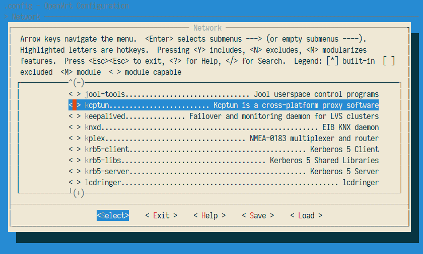
结束配置
至此，编译参数部分介绍完毕，设定完所有参数后，返回到主菜单，按下“左右光标键”，将光标移动到 “Exit ”按钮上按下回车，将弹出退出提示框，询问是否保存当前设置，如果想要保存当前设置请使用左右光标键选择 “Yes”并回车，如果想放弃此次更改请选择 “No”并回车。如果误点击退出按钮出现此提示框，双击两次 “ESC”键即可回到设置界面。
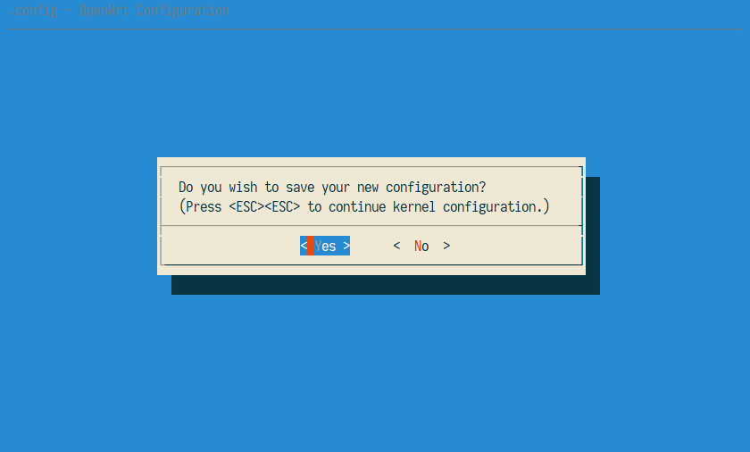
结束配置后，此次配置信息将存储在 lede 目录下的 .config 文件中，如果在进行保存编译配置后之后再次执行 make menuconfig 命令，系统将会自动载入 .config 文件中的内容，你可以在上次保存的编译配置上进行更改。如果丢失此文件，所有配置将会丢失并重置，所以请务必妥善保存此文件。
本文转载：https://mlapp.cn/374.html